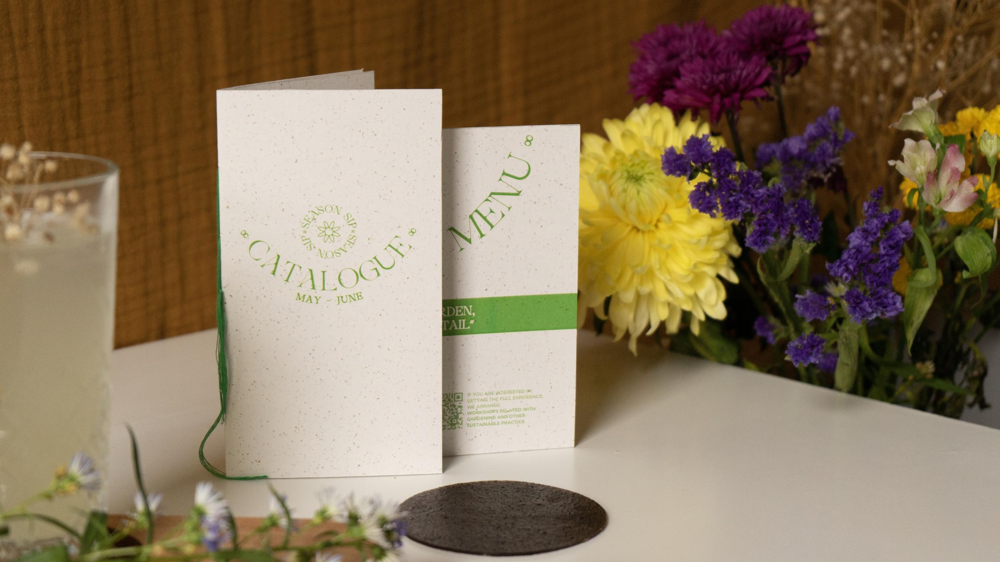
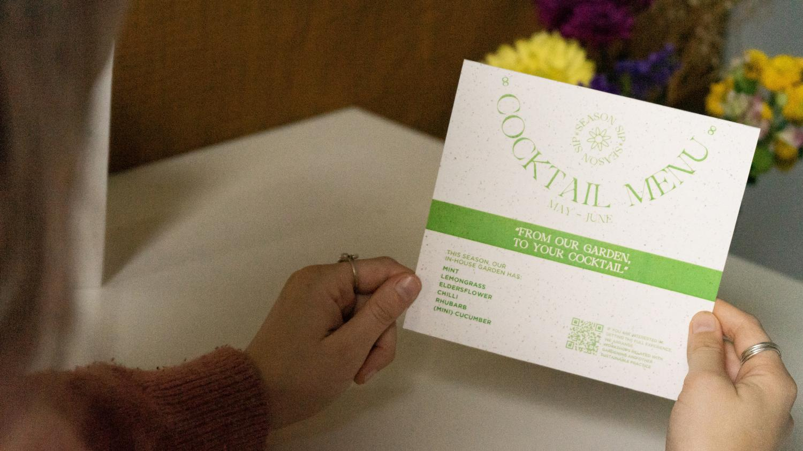
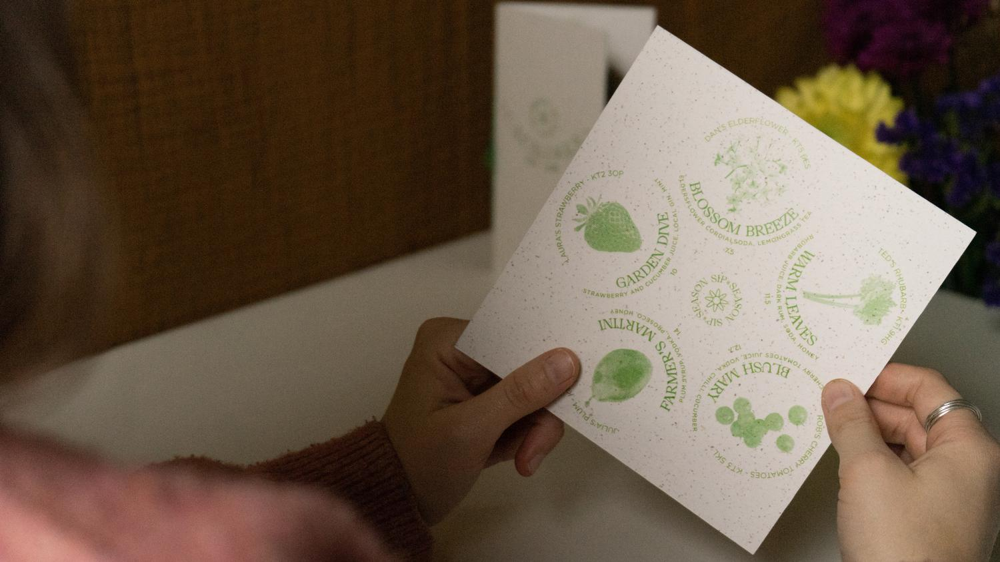
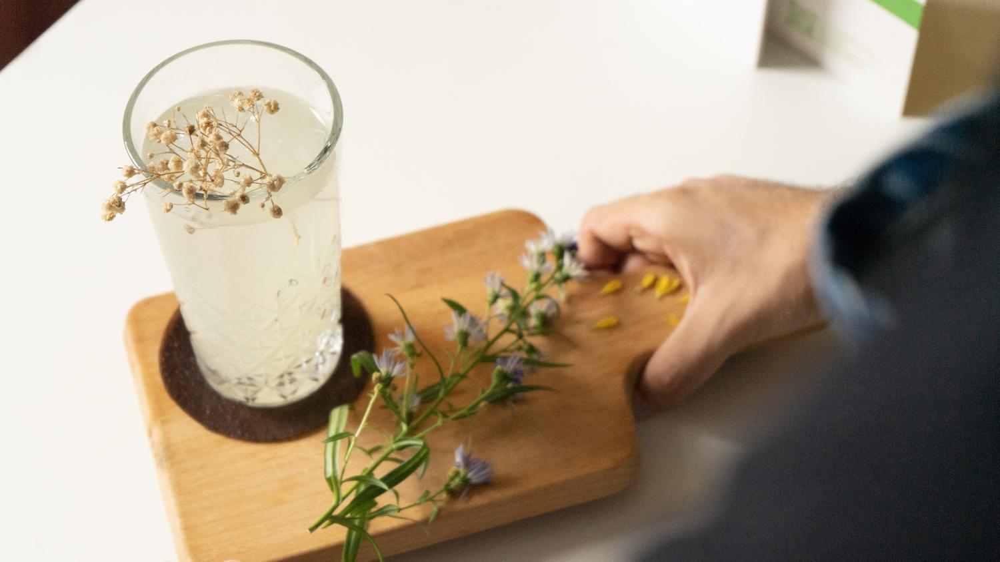

Season Sip
Branding
Menu & Catalogue Design
BioCoasters (BioMaterials)
Art Direction
2023
“Season Sip” is a space where the community is cherished, and seasonality is the key to respecting nature.
A bar that focuses on delivering cocktails made from seasonal products, either in-house or locally grown.
This project started with me researching Biomaterials. Working as a Bartender as my side job, I identified
a few problems in traditional bars - fruits imported from far-away countries, perfectly-good fruit going to waste,
and a lack of connection with the place and community around it.
“Season Sip” is an answer to that.



Coffee Grounds BioCoasters
It embraces innovation, using fruit and coffee waste to create Biomaterial coasters and bar mats, that feel like leather.
They are biodegradable and can be compostable, transforming them into positive waste.